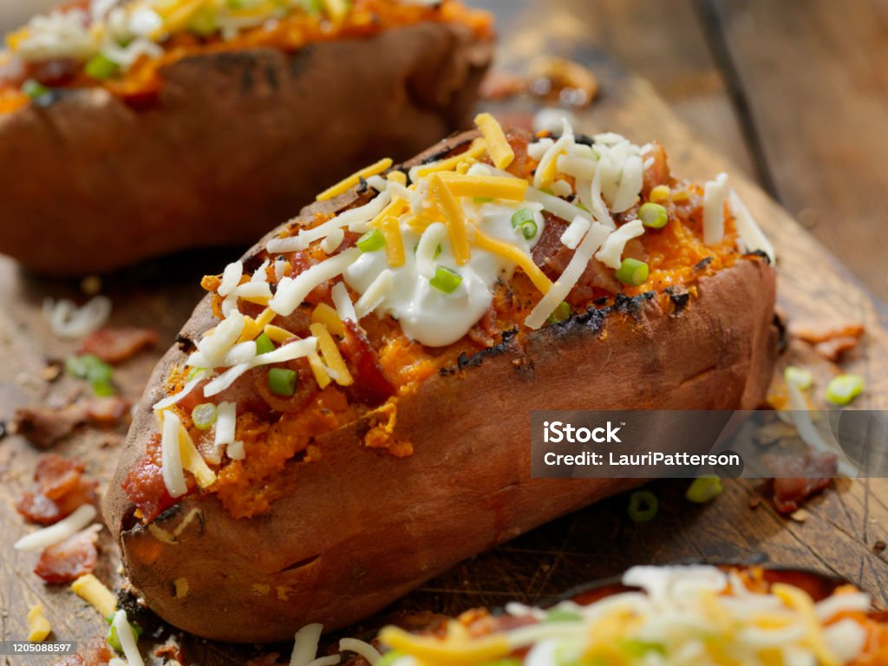

Loaded Stuffed Sweet Potato

A worm, tender sweet potato baked until perfectly soft on the inside, then split open a
and generously filled with a delicios mix of savory toppings. The natural sweetness of the potato pairs beautifulluy with creamy fillings, melted
cheese, seasoned vegetables, or protein like shredded chicken, minced beef, or chickpeas. Finished with a drizzle of sauce, such as sour cream, garlic mayo, or a spicy dressing and a sprinkle of fresh herbs, this hearty
dish is comforting, wholesome, and incrediblu satisfying. Perfect for a balanced meal that feels indulgent yet nutrutious.
Ingredients
- 4 orange-fleshed sweet potatoes
- ½ tablespoon olive oil
- 1 (8 ounce) package bacon, diced
- ⅓ cup sliced green onions
- salt to taste
- freshly ground black pepper to taste
- cayenne pepper to taste
- ½ cup shredded sharp white Cheddar cheese
- 2 tablespoons creme fraiche
- 2 teaspoons fresh lime juice
- 2 tablespoons shredded sharp white Cheddar cheese, or to taste
Instructions
- Preheat the oven to 400 degrees F (200 degrees C).
- Place sweet potatoes on a baking sheet. Prick with a knife and drizzle with olive oil; rub to coat. Space sweet potatoes evenly apart.
- Bake in the preheated oven until completely tender, about 35 minutes.
- Meanwhile, add bacon to a pan over medium heat. Cook and stir until bacon starts to get crispy and the fat turns foamy, 4 to 5 minutes. Add green onions and jalapeño; cook and stir for 1 minute. Remove from heat and set aside.
- Let sweet potatoes cool until safe to handle. Leave the oven on. Cut off the top 1/3 of each potato, holding the knife at a 45-degree angle. Scoop out sweet potato flesh from both the top and bottom halves, leaving at least 1/4 inch flesh in the bottoms to make the shells.
- Season the sweet potato flesh with salt, pepper, and cayenne. Add 1/2 cup cheese, creme fraiche, and lime juice. Mash with a potato masher. Add the bacon mixture and mix until combined. Spoon filling into the sweet potato shells. Lightly scatter remaining cheese on top.
- Bake until heated through and tops have started to brown, 20 to 25 minutes.
Home